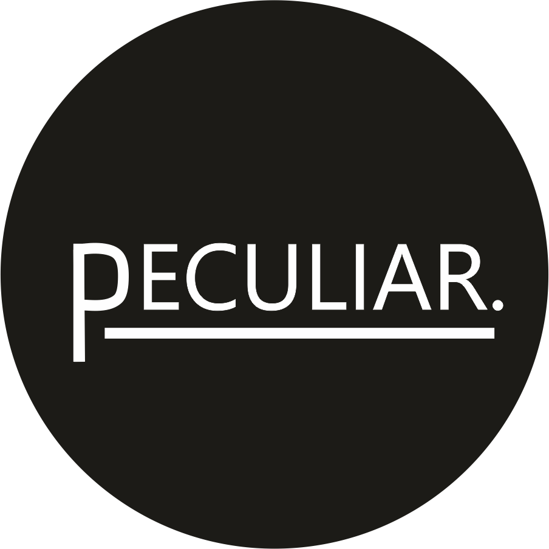

Hola ! Soy Magdalena creadora de Peculiar, tienda de correas, aca podes conocernos y saber mas de nuestros productos. Esta marca fue creada en 2018, inspirados por una correa de camara heredada de mi abuelo, asi surge la primera peculiar Son productos hechos artesanalmente en Uruguay.
En la sección estampas podes ver estampas creadas por nosotros exclusivamente para la marca, en su mayoria por mi, pero en algunos casos de otros colaboradores.
Desde peculiar estamos trabajando constantemente en nuevos diseños; ya sea con telas exclusivas o con distintos diseñadores buscando unicidad en cada diseño.
Si bien la concepción de la marca fue en base a correas para cámaras, también empezamos a trabajar haciendo correas para instrumentos; guitarristas y bajistas confiaron en nuestro trabajo Nuestra idea es empezar levemente a ampliar nuestros horizontes haciendo bolsos de mano; riñoneras y cinturones Peculiar; ya sea combinado cuero y estampas o empezando a innovar con cuero orgánico.
